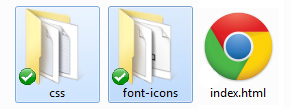

An easy way to generate your buttons with CSS3 classes. Includes transition animation effect for your buttons also with Font Icons.
This documentation was made only for "Fully Customizable CSS3 Button Pack"
by: Osman Fikret Ceylan
It's simple.
First copy the "css" and "font-icons" folder inside of your root directory, to where the base HTML file is:
Second you need to add CSS files named as "glyphicons.css" and "button-styles.css" into your HTML's <head> section after your own CSS files:
<head>
...
<link href="YOUR-CSS-FILE" rel="stylesheet">
...
<link href="../css/glyphicons.css" rel="stylesheet">
<link href="../css/button-styles.css" rel="stylesheet">
...
</head>
If you don't want to use icon fonts you can just add "button-styles.css" into your HTML's <head> section:
<head>
...
<link href="YOUR-CSS-FILES" rel="stylesheet">
...
<link href="../css/button-styles.css" rel="stylesheet">
...
</head>
You are ready to use buttons now. You just need to choose an element and add classes to them as described. Here is the usage of the Buttons (simplified):
<a class="button-general button-small" href="YOUR-LINK">BUTTON NAME</a>
Button Name
General class is "button-general", after adding this class, you should add size of the button with defined class. You can change size of the button with these three classes: "button-small" "button-medium" "button-large"
If you want to change color of the buttons you can add these defined color classes to the button: "blue" "green" "yellow" "orange" "red" "purple" "grey" "dark".
Here is an example of adding color to a button:
<a class="button-general button-small grey" href="YOUR-LINK">BUTTON NAME</a>
Button Name
<button class="button-general button-medium" href="YOUR-LINK">BUTTON NAME</button>
General class is "button-general", after adding this class, you should add size of the button with defined class. You can change size of the button with these three classes: "button-small" "button-medium" "button-large"
If you want to change color of the buttons you can add these defined color classes to the button: "blue" "green" "yellow" "orange" "red" "purple" "grey" "dark".
Here is an example of adding color to a button:
<button class="button-general button-medium yellow" href="YOUR-LINK">BUTTON NAME</button>
<input class="button-general button-large" type="button" value="BUTTON NAME" href="YOUR-LINK" />
General class is "button-general", after adding this class, you should add size of the button with defined class. You can change size of the button with these three classes: "button-small" "button-medium" "button-large"
If you want to change color of the buttons you can add these defined color classes to the button: "blue" "green" "yellow" "orange" "red" "purple" "grey" "dark".
Here is an example of adding color to a button:
<input class="button-general button-large purple" type="button" value="BUTTON NAME" href="YOUR-LINK" />
For different styles of the button you can see "Customisation" section.
You can make as many buttons as you like with defined class as described in "Customisation" section.
There are thousands of different variations of the buttons. You can use different kind of styles, icons, effects on buttons with adding name of the classes as described in "Customisation" section.
You can add defined classes as described below to your button for change button's style:
Here are the classes of Border and Border Radius:
<a class="button-general button-medium yellow border" href="YOUR-LINK">BUTTON NAME</a>
<a class="button-general button-medium yellow radius-high" href="YOUR-LINK">BUTTON NAME</a>
Button Name
Button Name
You can change class name from the list above to change appearance of button style.
Here are the classes of Text Shadow:
<a class="button-general button-medium yellow text-shadow-default" href="YOUR-LINK">BUTTON NAME</a>
<a class="button-general button-medium yellow text-shadow-high" href="YOUR-LINK">BUTTON NAME</a>
Button Name
Button Name
You can change class name from the list above to change appearance of button style. You can also use different classes together. For example: "radius-left-right-bottom" "text-shadow-high"
Here are the classes of Box Shadow:
<a class="button-general button-medium yellow box-shadow-default" href="YOUR-LINK">BUTTON NAME</a>
<a class="button-general button-medium yellow box-shadow-high" href="YOUR-LINK">BUTTON NAME</a>
Button Name
Button Name
You can change class name from the list above to change appearance of button style. You can also use different classes together. For example: "radius-high" "box-shadow-high"
Here is the class of Gradient Overlay:
<a class="button-general button-medium yellow gradient-overlay" href="YOUR-LINK">BUTTON NAME</a>
Button Name
You can also use different classes together. For example: "radius-high" "gradient-overlay"
Here is the class of Transition Effect:
<a class="button-general button-medium yellow transition-default" href="YOUR-LINK">BUTTON NAME</a>
Button Name
You can also use different classes together. For example: "gradient-overlay" "transition-default" "box-shadow-hight"
<a class="button-general button-medium yellow gradient-overlay box-shadow-high transition-default" href="YOUR-LINK">BUTTON NAME</a>
Button Name
You can add icons to your button. To apply icons in button follow the instructions below:
For adding icon fonts to your button you should add default font icon trigger class "glyphicons" and then you can choose and add the icon name from the list below like "download" or "shopping_cart".
Here is the example of Font Icons:
<a class="button-general button-medium yellow glyphicons download" href="YOUR-LINK">BUTTON NAME</a>
<a class="button-general button-medium yellow glyphicons shopping_cart" href="YOUR-LINK">BUTTON NAME</a>
Button Name
Button Name
You can also use different styles together like:
<a class="button-general button-medium yellow box-shadow-high border radius-left-bottom-right-top transition-default glyphicons download" href="YOUR-LINK">BUTTON NAME</a>
<a class="button-general button-medium orange text-shadow-default radius-right-bottom-left-top transition-default glyphicons shopping_cart" href="YOUR-LINK">BUTTON NAME</a>
Button Name
Button Name
You can change your button's font color to light or dark. just add "light-fontcolor" for white or "dark-fontcolor" for black color. If you desire to use white color and if readability reduced you can add one of the "text-shadow-default" or "text-shadow-high" classes to your button.
You can also change your button's font icon color to light. Just add "white" class to icon. Default font icon color is black, for black font icon color you don't need to add any class to button.
<a class="button-general button-medium yellow box-shadow-high text-shadow-high border radius-left-bottom-right-top transition-default glyphicons search light-fontcolor" href="YOUR-LINK">BUTTON NAME</a>
<a class="button-general button-medium dark text-shadow-high radius-right-bottom-left-top transition-default glyphicons cloud white light-fontcolor" href="YOUR-LINK">BUTTON NAME</a>
Button Name
Button Name
Thanks so much to: